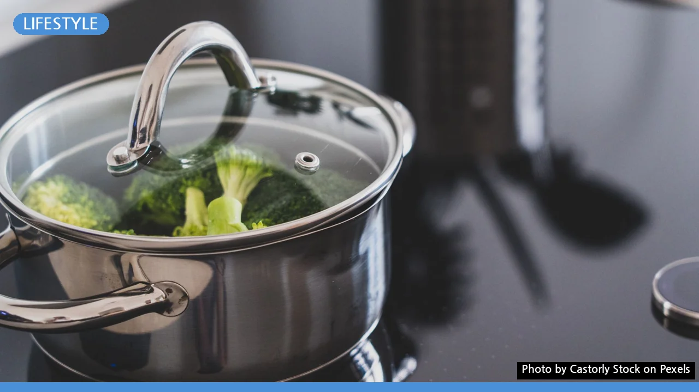

에어프라이어 요리 막막한가요? 초보 위한 핵심 레시피부터 활용 팁까지
사진: Castorly Stock / Pexels (무료 이미지, 출처 표기)
에어프라이어, 처음이라면 이것부터! 필수 사전 지식
에어프라이어를 새로 구매했지만 막상 어떤 요리부터 시작해야 할지 고민이셨나요? 혹은 간단한 요리도 망칠까 봐 걱정하고 계신가요? 이 글에서는 에어프라이어 초보자도 쉽게 따라 할 수 있는 기본 사용법부터, 실패 없는 필수 레시피, 그리고 요리 성공을 위한 핵심 팁까지 모두 알려드립니다. 지금부터 에어프라이어의 신세계를 경험해 보세요.
에어프라이어는 뜨거운 공기를 빠르게 순환시켜 재료를 익히는 원리로 작동합니다. 적은 기름으로도 바삭하고 맛있는 요리가 가능하며, 오븐보다 예열 시간이 짧고 사용법이 간단해 요리 초보자에게 특히 유용합니다.
에어프라이어 구매 시에는 가족 수와 요리 스타일에 맞춰 적절한 용량을 선택하는 것이 중요합니다. 1~2인 가구는 2~3L, 3~4인 가구는 4~5L, 5인 이상 대가족은 6L 이상의 제품을 고려해 보세요. 제품에 따라 기능과 구성품이 다르지만, 대부분 조리 바스켓과 뜨거운 공기가 순환하는 공간으로 이루어져 있습니다.
초보도 성공하는 에어프라이어 요리 기본 원칙
에어프라이어 요리에 성공하려면 몇 가지 기본 원칙을 지키는 것이 좋습니다. 이 원칙만 잘 따른다면 어떤 재료든 맛있게 조리할 수 있습니다.
- 적정 온도와 시간 설정: 레시피나 재료 패키지에 표기된 권장 온도와 시간을 따르는 것이 가장 안전합니다. 처음에는 제시된 시간보다 2~3분 짧게 조리한 후 상태를 확인하며 추가 조리하는 것이 좋습니다.
- 예열하기: 오븐처럼 에어프라이어도 5분 정도 예열(preheat)을 해주면 재료가 처음부터 균일하게 익고 조리 시간을 단축할 수 있습니다. 대부분 180~200℃에서 예열합니다.
- 재료는 겹치지 않게: 바스켓에 재료를 너무 많이 채우면 뜨거운 공기 순환이 방해받아 제대로 익지 않거나 덜 바삭해질 수 있습니다. 공간을 여유 있게 확보하고, 필요하다면 여러 번 나눠 조리하세요.
- 중간에 뒤집거나 흔들어주기: 재료의 양면이 고르게 익도록 조리 중간에 한두 번 뒤집거나 바스켓을 흔들어주는 것이 좋습니다. 특히 냉동식품이나 채소류에 효과적입니다.
실패 없는 에어프라이어 초간단 레시피 3가지
이제 본격적으로 에어프라이어를 활용한 초간단 레시피를 소개합니다. 누구나 쉽게 따라 할 수 있는 메뉴들로 구성했습니다. 아래 표는 2026년 11월 기준으로 일반적인 에어프라이어 조리 시간을 안내하며, 제품의 종류나 재료의 크기에 따라 달라질 수 있습니다.
에어프라이어 더 맛있게 쓰는 꿀팁과 관리 요령
에어프라이어를 더욱 편리하고 위생적으로 사용하기 위한 몇 가지 팁을 알려드립니다.
- 종이 호일 및 실리콘 용기 활용: 바스켓에 종이 호일이나 내열 실리콘 용기를 깔면 세척이 훨씬 간편해집니다. 특히 기름기가 많은 요리를 할 때 유용하며, 전용 실리콘 트레이 등 다양한 액세서리가 출시되어 있습니다.
- 냄새 제거: 생선이나 냄새가 강한 재료를 조리한 후에는 에어프라이어 내부에 냄새가 밸 수 있습니다. 레몬 슬라이스나 베이킹소다를 바스켓에 넣고 10분 정도 돌리면 냄새 제거에 도움이 됩니다.
- 정기적인 청소: 바스켓과 트레이는 사용 후 바로 세척하는 것이 좋습니다. 내부의 열선이나 팬 부분에 기름때가 끼지 않도록 마른 천으로 닦아주거나, 중성세제를 묻힌 스펀지로 부드럽게 닦아 관리해 주세요.
궁금증 해결! 에어프라이어 요리 Q&A
에어프라이어 초보자들이 자주 묻는 질문들을 모아 답해드립니다.
Q: 에어프라이어는 항상 예열해야 하나요?
A: 대부분의 요리는 예열하는 것이 좋습니다. 예열을 하면 설정한 온도에 빠르게 도달하여 재료가 더 고르게 익고 조리 시간도 단축됩니다. 하지만 간단한 간식이나 이미 조리된 식품을 데울 때는 예열 없이 사용해도 무방합니다.
Q: 냉동식품은 해동 후 조리해야 하나요?
A: 에어프라이어는 냉동 상태의 식품도 바로 조리할 수 있는 장점이 있습니다. 다만 해동 후 조리할 때보다 조리 시간이 길어지므로, 제품 포장에 명시된 조리법을 따르거나 시간을 충분히 설정해 주세요. 중간에 뒤집어주면 더욱 고르게 익습니다.
Q: 기름을 꼭 발라야 하나요?
A: 에어프라이어는 기본적으로 기름 없이도 바삭하게 조리할 수 있지만, 감자튀김이나 일부 냉동식품 등은 기름을 살짝 발라주면 더 노릇하고 맛있게 익습니다. 스프레이 오일을 활용하면 기름 양을 조절하기 편리합니다.
Q: 조리 중 연기가 심하게 나면 어떻게 해야 할까요?
A: 조리 중 연기가 심하게 나는 원인은 주로 바스켓에 남은 기름때나 재료에서 너무 많은 기름이 빠져나오는 경우입니다. 바스켓을 깨끗하게 청소하고, 기름이 많은 재료는 종이 호일을 깔거나 중간에 기름을 한 번 비워내면 좋습니다. 과도한 양의 기름이나 너무 높은 온도는 피해주세요.
에어프라이어 요리는 생각보다 쉽고 간편합니다. 이 가이드에서 알려드린 기본 원칙과 레시피, 팁을 활용하여 건강하고 맛있는 요리를 즐겨보세요. 꾸준히 사용하다 보면 자신만의 레시피와 노하우를 쌓아갈 수 있을 것입니다.
🔗 이 글도 함께 보면 좋아요: 비건 식단 시작, 이것부터 확인하세요: 초보자를 위한 단계별 가이드
관련 추천 상품
에어프라이어, 에어프라이어 종이호일, 에어프라이어 실리콘 관련 인기 상품 보러가기
이 포스팅은 쿠팡 파트너스 활동의 일환으로, 이에 따른 일정액의 수수료를 제공받습니다.